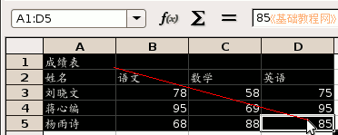
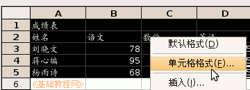
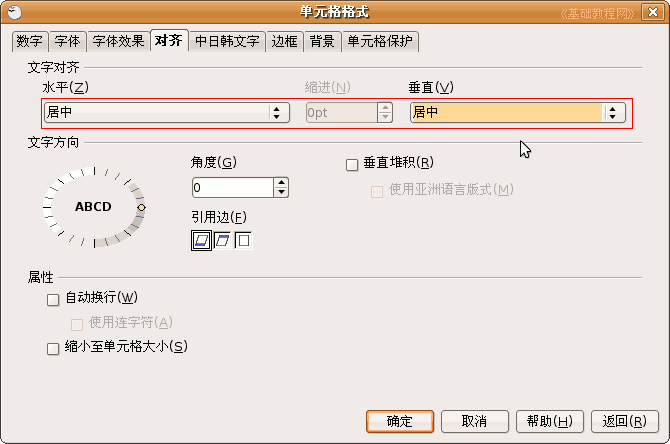
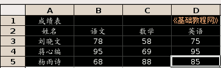
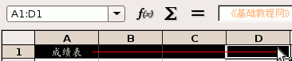
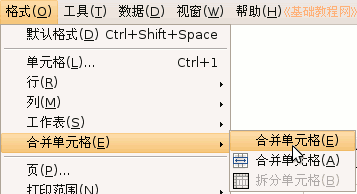
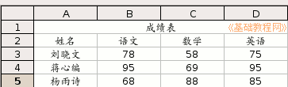

OpenOffice.org 教程之 Calc 电子表格
作者：TeliuTe 来源：基础教程网
二、居中对齐 返回目录 下一课输入好数据以后，还需要对表格进行适当的排版，把格式设置好，下面我们来看一个练习；
1、启动Calc
1）点击点菜单“应用程序－办公－OpenOffice.org 电子表格”；
2）出现一个满是格子的空白窗口，第一个格子看着边框要粗一些，表示选中状态；
2、设置格式
1）点菜单“文件－打开”命令，找到自己的文件夹，打开上次保存的“成绩表”文件；
2）从第1格开始拖动鼠标沿对角线到“85”那一格，用框选的方法，选中所有数据单元格；

3）把鼠标移到黑色选中里面，瞄准“数学”那儿敲右键，选择“单元格格式(F)..”命令，出来一个格式面板；

4）在格式面板中，点上面的“对齐”标签，把文字对齐里的“水平”和“垂直”都设为“居中”，点“确定”；

5）这时所有的数据都居中显示了，标题应该在表格的中央，在其他空白处点一下，取消选择；

再用拖动选择的方法，选中A1－D1的标题行，点菜单“格式－合并单元格－合并单元格”命令；
 
6）在空白处点一下，可以看到标题行合并成了一个格；

点一下菜单“文件－保存”命令，保存一下文件；
本节学习了Calc中对齐的基本操作，如果你成功地完成了练习，请继续学习下一课内容；
本教程由86团学校TeliuTe制作|著作权所有
基础教程网：http://teliute.org
美丽的校园……
转载和引用本站内容，请保留版权信息和本站链接。